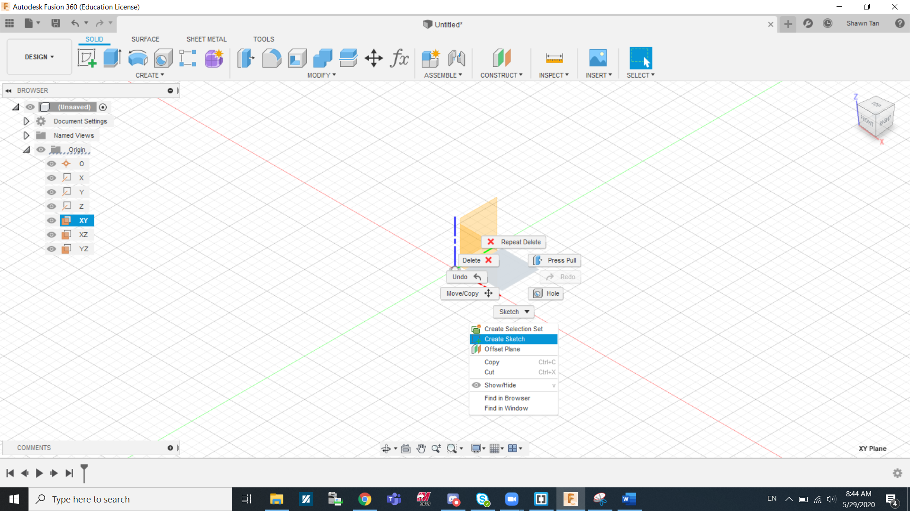
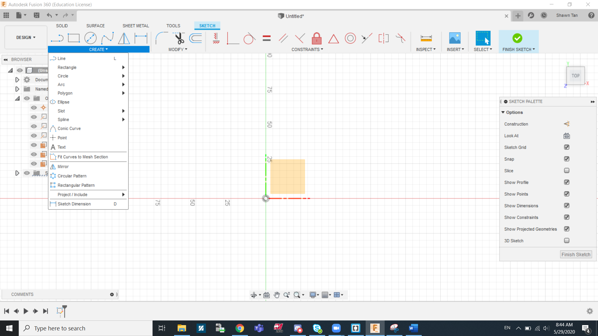
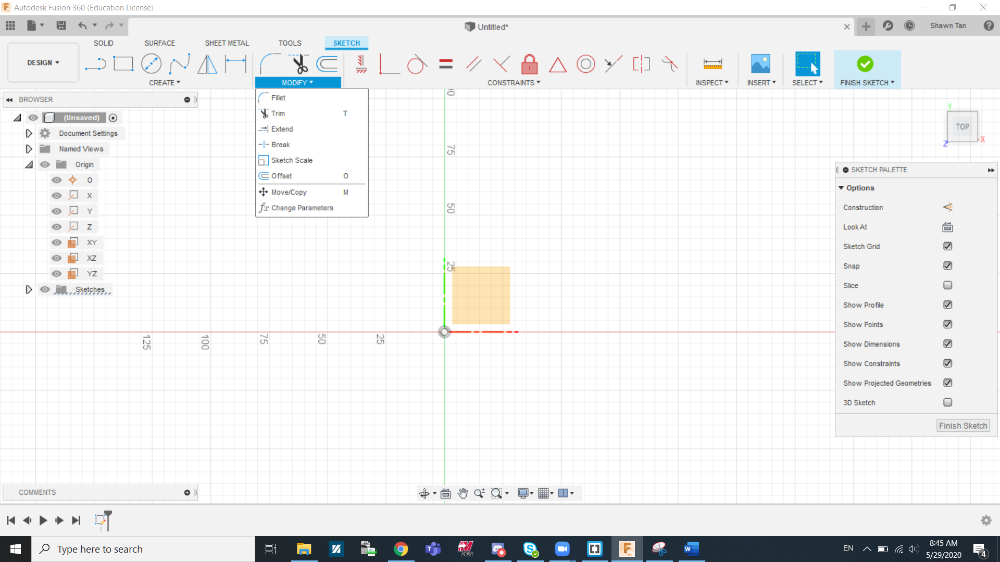
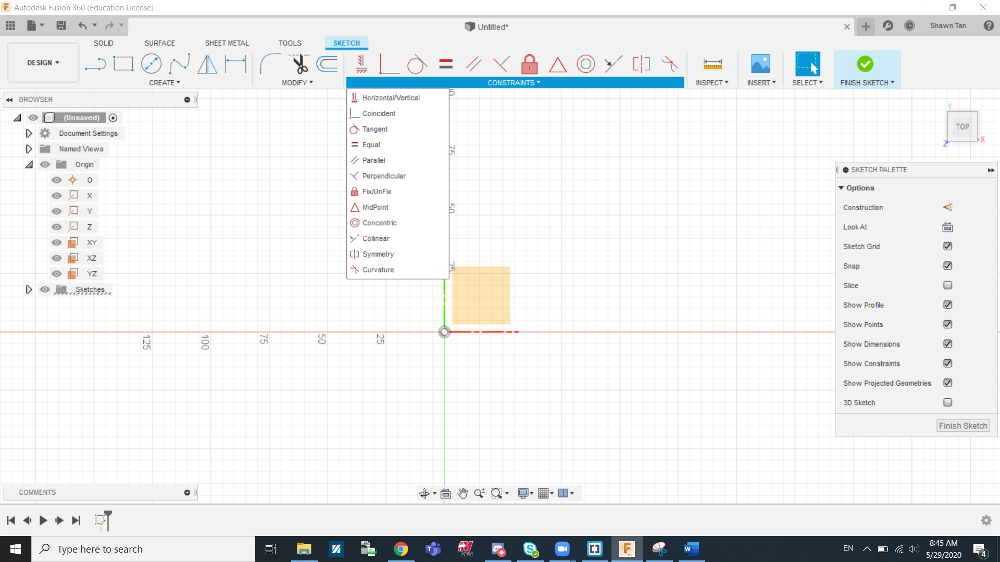
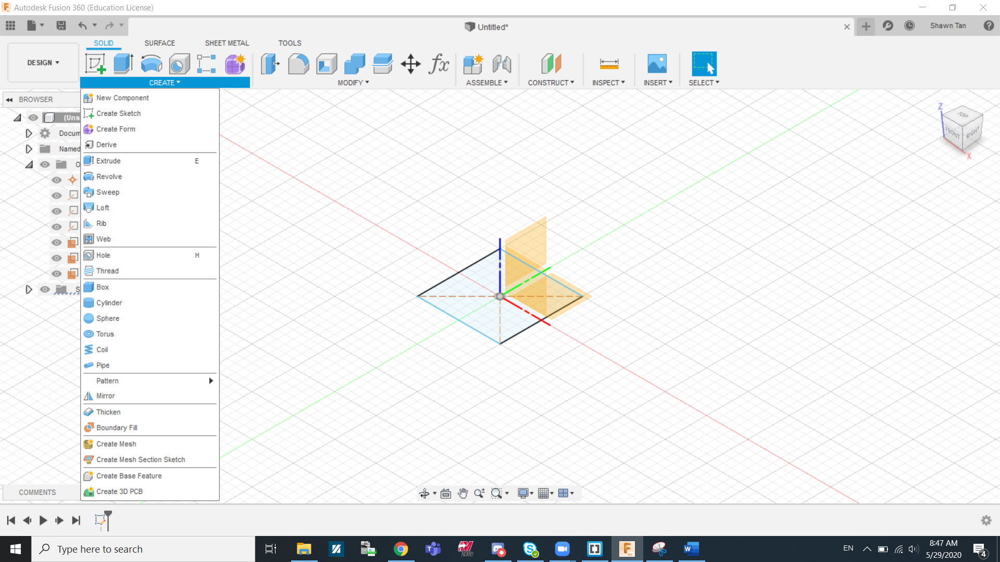
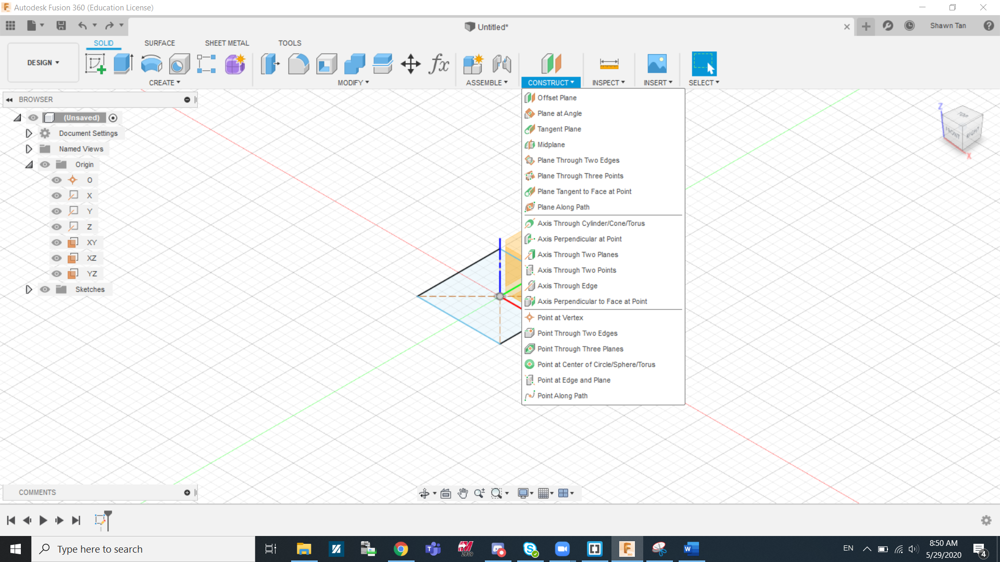
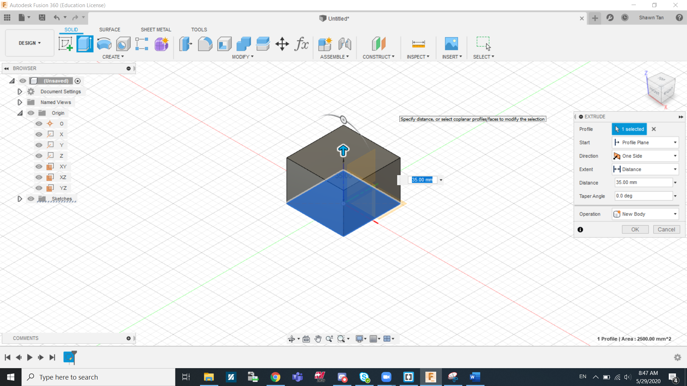
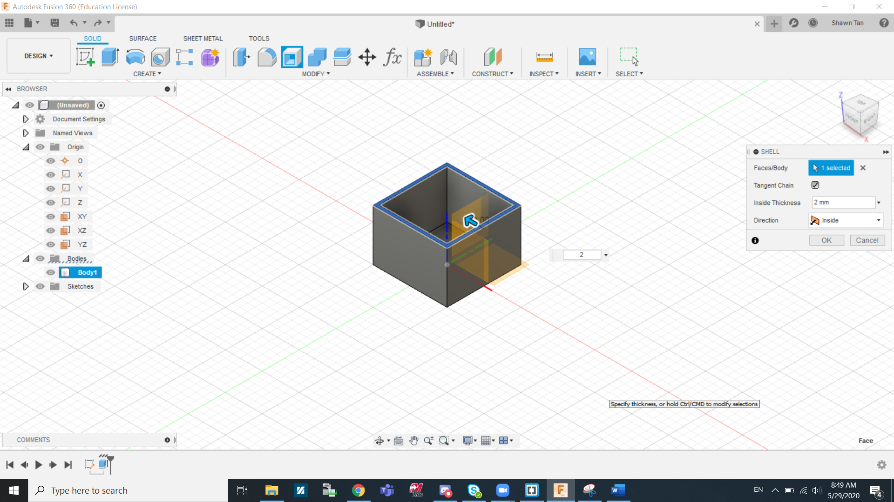
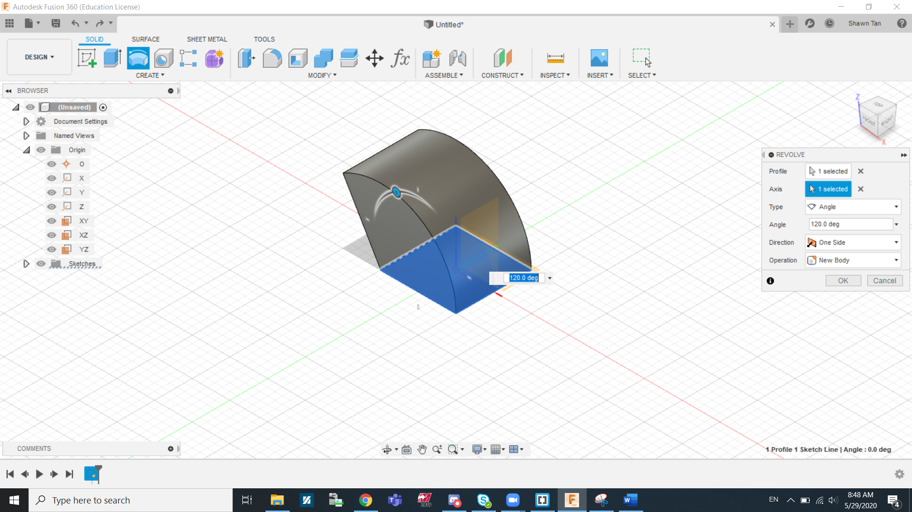
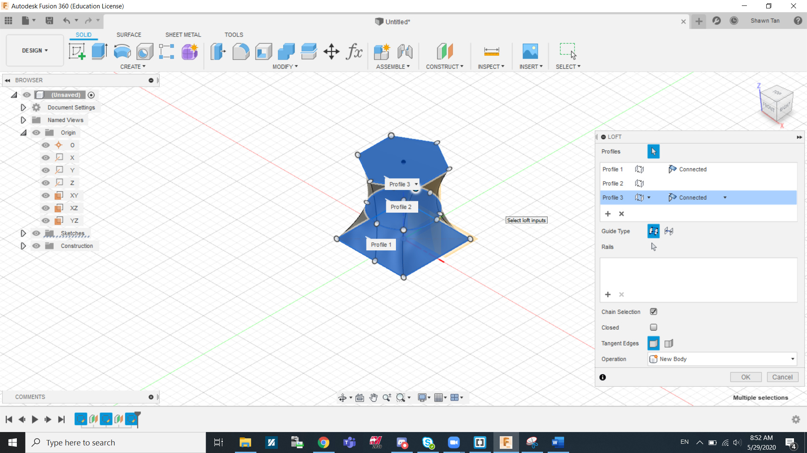

Introduction to Fusion 360
Basics of Fusion 360
Fusion 360 is a Computer Aided Design Software, similar to Autodesk Inventor, that uses a set of digital tools to craft objects. CAD is often used to design prototypes and concepts that are difficult to visualise on paper. I will be sharing some basic tools and functions of Fusion 360 but will continue to the explain others in the future.
Getting Around Fusion 360
Legend
- Left Mouse Button(LMB)
- Middle Mouse Button(MMB)
- Right Mouse Button(RMB)
- To move the camera around, hold down MMB and move your mouse.
- To rotate the camera, hold down MMB + shift key and move your mouse.
- To get an option wheel and drop down box, press RMB.
For most cases, I recommend using the navigation box located on the top right corner to get necessary views.
The Grid
The X-axis is red, Y-axis is Green, Z-axis is Blue. Thus the plane between the red and green is the XY plane, the plane between the green and blue is the YZ plane, the plane between the blue and red is the XZ plane. Right click on any plane and click create sketch.
The Toolbar
Under the create section in sketch is where you can get most of your basic shapes. Line, rectangles and circles are shapes commonly used in most of our projects. Other than shapes, patterns are also used to replicate profiles (such as intricate sketches etc.). Project Geometry can be really useful when most of your profiles are based of a certain body or profile. What it does is that it highlights the body/profile to allow you to snap to it when in sketch mode. Dimensions is also useful for altering the size of the line/shape/object after creating it.
Under the modify section in sketch is where you can get tools to create more intricate features. Sometimes create shapes do not provide everything or would be too inefficient. That is what the modify section aims to help with. To make a rounded corner, we can use 2 lines and a circle and it will still be alright but a more efficient way is to fillet the corner where two lines meet by using the fillet tool and selecting both lines. Trim is also a useful tool to remove any unnecessery shapes or sections of shapes that might hinder further operations or just to make it more neat. Offset is another useful tool to know about. It comes in handy when you need to replicate a profile but scaling it up or down to make it bigger or smaller.
Under the constraints section in sketch is where you can get most of your constraining tools. Constraints are needed to ensure that for sketch can exist logically. By placing down constraints, you can lock certain lines in a place you want it to, which is important especially when modifying dimensions. If your sketch is not fully constrained then you can't move on to making it into a 3D solid. Some shapes already come with pre-existing contraints, e.g a rectangle has all opposing/alternate lines at a parallel constraint.
Under the create section in solids is where you can get most of your 3D tools. A few common tools are extrude, revolve, and loft, which I will explain in greater detail later on. Other useful functions are the pattern tool, which can replicate bodies/profiles in a pattern, and the mirror tool, which can help mirror bodies/profiles across a plane.
Under the construct section in solids is where you can get different kinds of workplanes. Creating workplanes are important when reference points are needed, such as mirroring across it, or just to create a body that extrudes into a different direction than the norm etc.. At this stage we mainly use offset planes but if some designs call for it, planes that faces a different direction than the origin planes might be added.
Extrude
Extrusion is a commonly used tool to make solid objects, so it important to understand as much as we can about this tool. First of all under start, we have 3 options, Profile plane, Offset plane, and From object.
- Profile plane: This is the more commonly selected option. It is used to extrude from the already selected plane.
- Offset plane: Instead of creating a offset workplane and extruding from there, you can just use the offset plane function to achieve the same thing in less steps.
- From object: This is used when we want to extrude a certain profile but from another face. This is used when we need similar bodies on multiple faces.
The next thing is direction of extrusion. Under direction we find One side, Two sides, and symmetric.
- One Side: The more commonly selected option, this allows you to extrude the profile in a single direction.
- Two sides: This allows you to extrude a sketch assymetrically in both directions. This means that you can extrude in two opposing directions at different lengths
- Symmetric: This allows you to extrude a sketch symetrically in both directions. This means that you can extrude in two opposing directions but at the same lengths
The next thing is extent of extrusion. Under extent we find Distance, To objects, and All.
- Distance: The more commonly selected option, this allows you to extrude the profile to a certain length (a minus can be added to reverse the direction).
- To objects: This allows you to extrude a sketch to another body or face. This is usually used to cut a cetain part of the object but not all the way.
- Symmetric: This allows you to extrude a sketch to an infinite distance. Almost always used in cutting operations to cut a profile through the entire profile.
The last thing is operation where we can find Join, Cut, Intersect, New bodies, and New components.
- Join: This function allows you to extrude an object that is connected to the object or plane you extruded from
- Cut: This function is to remove or cut out sections of a solid with the selected profile.
- Intersect: This function will allow you to keep any solid that intersects with the extruded profile, removing the rest in the process.
- New bodies: This creates a new body with its own set of properties
- New components: This a new component, similar to creating a new body but it also has its own origin plane and motion relation with the main body. Components are however not covered extensively in these lessons
Shell
Shelling is the process of hollowing out a solid. By shelling a body, you will make the inside of the body completely hollow. By shelling a face, you will open up the face and make the body hollow as seen in the image above.
Revolve
Revolve is another commonly used tool. I will breakdown how to use the revolve tool. Firstly, you can select the profile you want to revolve and which axis you want to revolve around. The next thing is the how you want to revolve to profile. Under Type, you can select Angle, To, and Full.
- Angle: This allow you to revolve the profile up to a certain angle.
- To: This command is used to revolve to a face or to an object
- Full: This gives you a complete revolution.
The last thing is operation, where we can find Join, Cut, Intersect, New bodies, and New components.
- Join: This function allows you to revolve an object that is connected to the object or plane you are revolving from
- Cut: This function is to remove or cut out sections of a solid with the selected profile.
- Intersect: This function will allow you to keep any solid that intersects with the revolved profile, removing the rest in the process.
- New bodies: This creates a new body with its own set of properties
- New components: This a new component, similar to creating a new body but it also has its own origin plane and motion relation with the main body. Components are however not covered extensively in these lessons
Loft
Lofting allows you to quite smoothly and organically connect profiles from multiple workplanes. As you can see in the image above, I lofted together a square, a circle, and a hexagon.
Nametag
To get started on Fusion 360, we made a nametag as our first design.

In the image above, I created a sketch using a set of guidelines found on blackboard. I first went to origin, right clicked on the xy plane and clicked create sketch. I made a 2 point rectangle starting from the origin point and adjusted the dimentions to 50mm by 15mm. I proceeded to fillet all corners by 4mm radius. The next thing I did was to create to keyhole loop. I made a 8mm diametre and a 4mm diametre at the midpoint of the left side of the keychain.

In this next image I extruded the sketch. Right after creating the sketch I went to the "Solids" tab and clicked extrude. I selected the surfaces I wish to be extruded and I extruded it by 2mm.

The next thing I did was to create a text on the keychain. Firstly I created a sketch on the top surface of the keychain. I was able to change the text size, fonts, and orientation.

The last step to this process was to extrude the text. I did the same thing to extrude the text but this time I did it by 1mm.